“Wordpress Automatic” Documentation by “ValvePress” v3.x.x
“Wordpress Automatic Plugin V 3.x.x”
By: Atef (deandev.com)
Support: deandev.com/support
Thank you for purchasing my Plugin. If you have any questions that are beyond the scope of this help file, please feel free to open a support ticket here. Thanks so much!
Table of Contents
A) Plugin installation - top
For a fast overview of how this plugin works, watch the following video .
- Extract your downloaded file from http://codecanyon.net/downloads and you should find a .zip file named "wp-automatic-v3.x.x.zip" located in the folder named "Installation File"
- Visit your Wordpress Dashboard and under the "plugins tab" hit "add new"

- Hit the "Upload Plugin" button to upload the plugin file
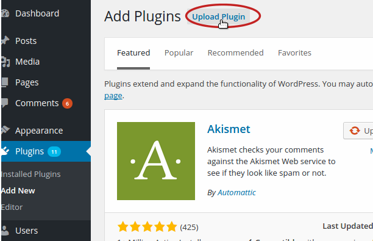 - Click "browse" button to start upload
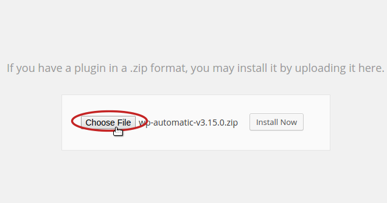 - Select the plugin file "wp-automatic-v3.x.x.zip" located at the folder named"Installation File" and hit open (This box differs according to your operating system.)
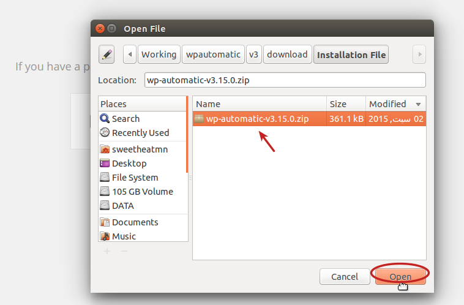 - Click "install now"
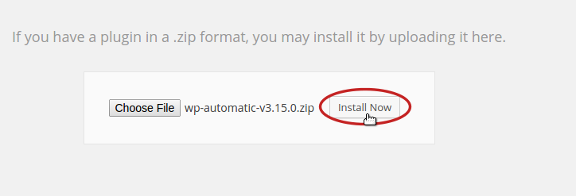 - Activate the plugin
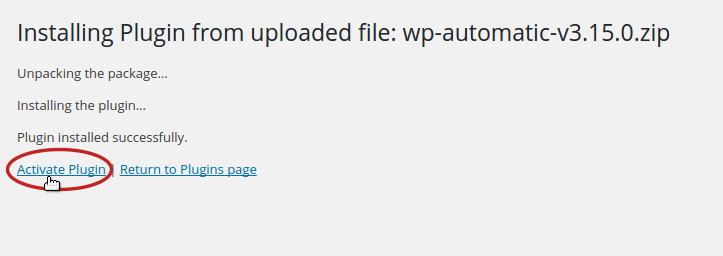
B) Setup Campaign - top
-
Articles Campaign
- To setup your first campaign hit "Add New" under the "Wordpress Automatic" menu

Articles campaign can post articles from ezinearticles.com matching the keywords you specify.
- General options will get explained here (later) and it is the same for all campaign types like facebook,amazon ... etc.
Just add test keywords and hit the publish button. you don't need to set any other options as they are all optional. I will explain all options later but let's run the campaign to see how it works...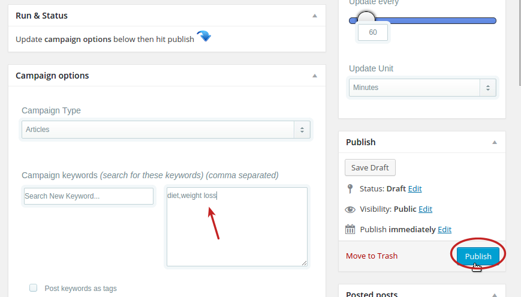
Now the campaign is published and ready for processing click the run now button to get our first post 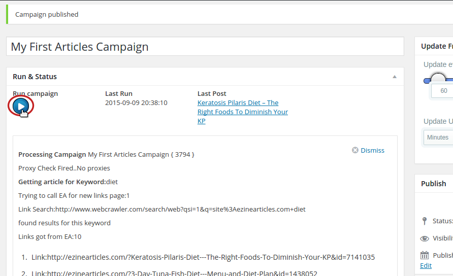
Now the plugin posted the first item when we clicked the run button and every time the run button is clicked the plugin will create another new post. 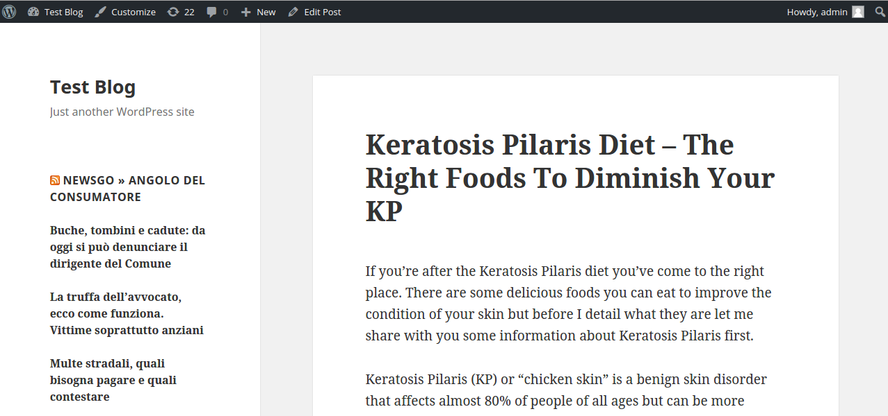
Now you know how the plugin is working manually and you don't need to always click the run button but the campaign will post without any interventions according to the inteval set on the right left box and will be explained below.
Let's see in detail general options of the plugin.
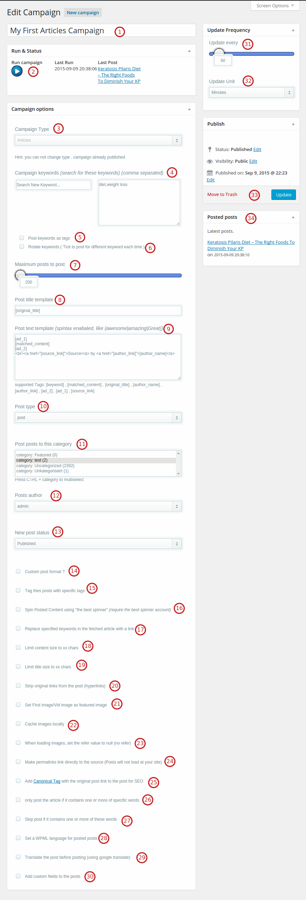after you have filled all needed data your campaign will be ready for processing
- Campaign Title: set a title for your reference as the campaign name
- Run Campaign: Click this button if you want to manually run the campaign and get an instant post.
- Campaign Type: select the source you want to get content from various sources are allowed
- Keywords that will be used to search for the content. comma separated.
- Post Keywords as tags: tick this option to post search keywords as post tags when the post get published
- Rotate Keywords: By default the plugin does not post for the second keyword unless there is no items to post for the first keyword. Tick this option if you want to post for a different keyword each time the campaign run
- Maximum Posts to post for that campaign: after this num of posts campaign will stop processing
- Post title template: Template of the final post title. the tag [original_title] will be replaced by the original fetched item title.
- Post content supports tags to build your custom post structure. Supported tags differs according to the campaign type here are a list of supported tags for each type
- Articles
- [matched_content]: will be replaced with the original fetched article content
- [original_title]:article title
- [author_name]:author name
- [author_link]:author link
- [enclosure_link]: Returns the enclosure link of the feed item. This may be an image src url,an audio source url or a video source url.
- [source_link]:will be replaced with the original article source link
- Feeds
- [matched_content]: will be replaced with the original fetched article content
- [original_title]:title of the post
- [publish_date]:the date when the feed item published
- [source_link]:will be replaced with the original article source link
- Amazon
- [product_img]: will be replaced with the product image src
- [product_link]: will be replaced with the product amazon page link
- [product_chart]: get replaced by the add to chart link
- [product_price]: will be replaced with the product price if possible Note some products will not return a price especially that depends on the user choise like a dress with different sizes.
- [price_numeric]: Numerical value of the price with no formating.
- [product_desc]: will be replaced with the original fetched product descreption
- [review_iframe]: get replaced with the item customer reviews displayed in an iframe.
- [product_asin]: Product unique amazon ASIN
- [source_link]:will be replaced with the original item source link
- Clickbank
- [product_img]: will be replaced with the product image src
- [product_link]: will be replaced with the product sales page with your affiliate link
- [product_original_link]: will be replaced with product sales page link without affiliation
- [product_desc]: will be replaced with the original fetched product descreption
- [source_link]:will be replaced with the original item source link
- Youtube
- [vid_player]: will be replaced with the posted video player
- [vid_id]: get replaced by the youtube video id
- [source_link]: will be replaced with the youtube original vid link
- [vid_img]: replaced with video thumb img src
- [vid_views]: will be replaced with video views count
- [vid_rating]: will be replaced with stars rating of the video
- [vid_desc]: will be replaced with the original fetched video descreption
- [vid_time]:Video time
- [vid_duration]:Video duration
- [vid_author]:Video author channel id
- [vid_author_title]:Video author title
- [vid_likes]:Video liked times
- [vid_dislikes]:Video dislikes times
- [source_link]:will be replaced with the original article source link
- Vimeo
- [vid_title]: Title of the item
- [vid_title]: Video description
- [vid_embed]: Video embed code
- [vid_id]: Video id
- [vid_url]: Video url
- [vid_img]: Video thumbnail url
- [vid_views]: Number of views of the video
- [vid_likes]:Times the video was liked
- [vid_duration]:Video duration
- [vid_width]:Width of the video
- [vid_height]:Height of the video
- [vid_created_time]:Date when the video was created
- [vid_modified_time]:Time the video was last modified.
- [vid_author_name]:Video author name
- [vid_author_id]:ID of the author
- [vid_author_link]:Link of the author.
- [vid_author_picutre]:Author thumbnail image src.
- [vid_tags]:Tags of the video.
- Flicker
- [img_title]:Image Title
- [img_author]:Image author ID
- [img_src]:Image Src link
- [img_src_s]:small square 75x75
- [img_src_q]:large square 150x150
- [img_src_t]:thumbnail, 100 on longest side
- [img_src_m]:small, 240 on longest side
- [img_src_n]:small, 320 on longest side
- [img_src_z]:medium 640, 640 on longest side
- [img_src_c]:medium 800, 800 on longest side†
- [img_src_b]:large, 1024 on longest side
- [img_link]:Image link on flicker
- [img_author_name]:Image author name
- [img_description]:Image description
- [img_date_posted]:Date when the image posted
- [img_date_taken]:Date when the image taken
- [img_viewed]:Num of views of the image
- [img_tags]:image tags on flicker
- [source_link]:will be replaced with the original article source link
- eBay
- [item_id]:added item id on ebay
- [item_title]:item title
- [item_description]:description of the item
- [item_images]:html of all items images
- [item_img]:item image
- [item_link]:item link on ebay
- [item_publish_date]:when item published
- [item_bids]:Number of current bids if applicable
- [item_price]:current item price
- [item_bin]:item buy it now price if applicable
- [item_end_date]:item when the listing ends
- [item_payment]:abvailable payment options
- [source_link]:will be replaced with the original item source link
- Spintax
No tags are supported
- Facebook
- [original_title]: Original title of the FB post
- [matched_content]: Original content of the FB post
- [original_date]: Date when the item was posted
- Pinterest
- [pin_id]: ID of the pin
- [pin_url]: pin url @ pinterest.com
- [pin_link]: link where the pin image originally exists this is the pin external link to an external site.
- [pin_title]: Title of the pin
- [pin_description]: Description of the pin
- [pin_board_id]: Pin board id
- [pin_board_url]: Url of the pin board.
- [pin_board_name]: Name of the board the pin belongs to.
- [pin_pinner_username]: Username of the pin pinner.
- [pin_pinner_full_name]: Full name of the pin pinner.
- [pin_pinner_id]: Pin pinner id.
- [pin_domain]: Domain of the pin if posted from a URL.
- [pin_likes]:Number of likes of the pin.
- [repin_count]: Number of repins.
- [pin_img]: image src of the pin.
- [pin_img_width]: Width of the pin image.
- [pin_img_height]: Height of the pin image.
- Instagram
- [item_title]: Title of the item
- [item_id]: ID of the item
- [item_url]: Url of the post @ Instagarm
- [item_description]: Description of the item
- [item_img]: Img src of the item
- [item_img_width]: Width of the posted image
- [item_img_height]: Height of the posted image
- [item_user_id]: ID of the image poster
- [item_user_username]: Username of the image poster
- [item_user_name]: user name of the poster
- [item_user_profile_pic]: Poster profile pic source link
- [item_created_date]: Date when the item was published
- [item_likes_count]: Number of likes
- [item_tags]: Tags of the item
- Twitter
- [item_title]: Title of the item
- [item_id]: ID of the tweet
- [item_url]: URL of the tweet @ Twitter
- [item_retweet_count]: Count of rewtweets
- [item_favorite_count]: Count of favorite
- [item_author_id]: ID of the tweet author
- [item_author_name]: Name of the author
- [item_author_description]: Description of the author
- [item_author_url]: Url of the author @ twitter
- [item_created_at]: Creation date of the item
- Articles
- Post type : Select the post type, post or page or your custom post type
- Select the category that posts for this campaign will be posted in. CTRL+ category to multiselect.
- Post Author: select the post author
- Select new posts status Published or Draft etc
- Custom post format: Tick this if you want the post to be posted with a specific format like a video
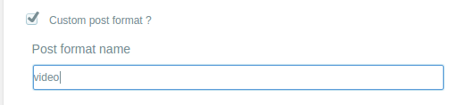
(note your theme must support the format)
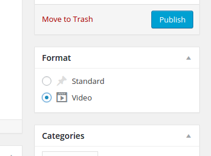 - Tag these posts with specific tags: activate if you want created posts for this campaign to be tagged with specified tags

You can also Randomly pick tags from this list - Activate if you are using the best spinner to spin the content and get unique posts
- Activate if you like to replace the chosen keywords that was used to fetch the content with a specific link
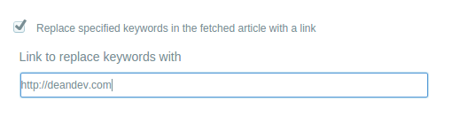 - Limit content size: activate this option if you want to truncate the content to a specific number of chars
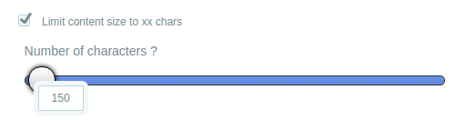
- Limit title size: activate this option if you want to truncate the title to a specific number of chars
- Strip original links: Activate to stip all links from the original content
- Set first image/vid image as featured image : tick if you like to set a featured image for the post
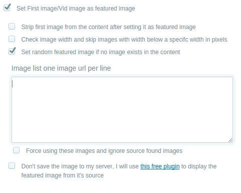
- Cache images locally : tick if you like to save the images to your server. it will be uploaded to your uploads folder
- When loading images,set the refer value to null: by default when caching images the plugin send the refer value as the domain where the image exists but some sites will not correctly return the image if the refer was not null, tick it if the images cached didn't display
- Make permalinks link directly to the source: activate this option so the plugin will alter your theme title display (if possible not all themes will work) so it directly link to the source and the posts loads at the source not your site
- Add Canonical tag: activate it if you want the plugin to add a canonical tag to the post at your site so it tells Google about the original source of the content check this for more http://moz.com/learn/seo/canonicalization
- Exact match: set words that must be included in the content
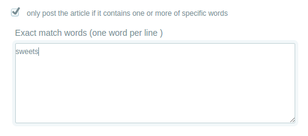 - Banned words: set words that must not be in the post
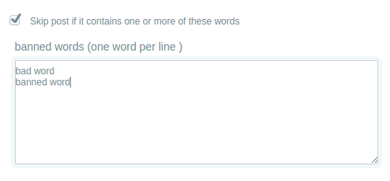 - Set a WPML language: if you are using WPML plugin to create a multiple languages website and you want the posts created to be for a specific language set the two letters language code you want.
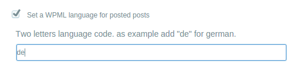 - Translation languages : select from what language to what to what language
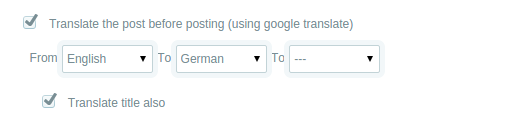 - Add custom fields to the post: Activate if you like to set custom fields to the posted post . you can use the below tags in the value field . hit the '+' button to add another custom field
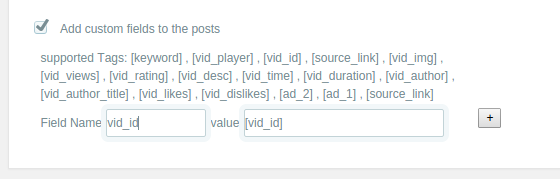 - Update every : choose the number
- Update unit : choose unit of the update
- hit "Publish" to save the current camapaign
- Posted posts: list of latest posted items
-
Feeds Campaign - top
Feeds campaign posts from feeds you specify.
Note: below are the campaign specific options. you can also check the general options already explained above.
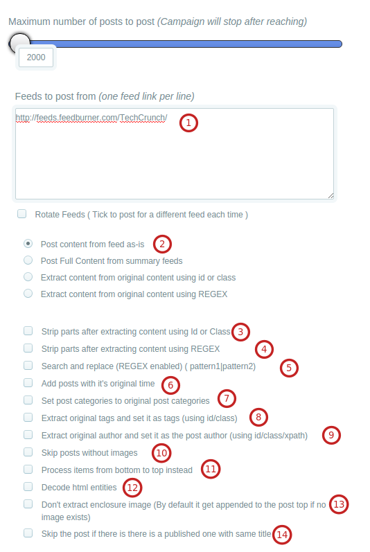- Feeds: add one feed link per line. It is recommended to create a separate campaign for each feed
- Content source
- Feed as-is: tick this option for the plugin to post the content from the feed text provided by the site
- Full content: tick this option for the plugin to try to get the full content from the original feed post (This will make the plugin load the original post and try to guess the full content )
-
Extract Content using id/class: (require basic html knowledge) here you can set id or class for up to three parts of the original content where the plugin will extract them and concat as the new post content .
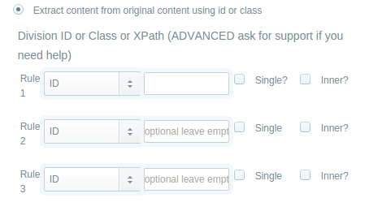
To know what is the class or the id you will need to analyze the original post content (view it's source) and find the div that contains the full content then know what is it's id/class for example for This TechCrunch feed here is a test post
by viewing it's source we can notice the div that contains the content has the class "article-entry" 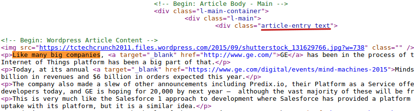 so the apprpriate setting will be
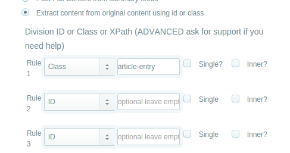Single means if there is more than one match the plugin will only consider the first one
Inner: means the plugin will grab the inner content of the div not the whole div -
Extract content using REGEX:(Advanced) REGEX (Regulr expressions) are not that easy as it depends on rules that you should be aware of
You can extract up to two parts by rule 1 and rule 2 . final content will be concating content from both. rule 2 is optional example: if you want to extract content between to unique texts in the content use this startHere(.*?)endHere where startHere is the unique text that the plugin will extract after and endHere is the unique text that the plugin will stop once found
For example extracting techCrunch http://feeds.feedburner.com/TechCrunch/ full content using regex
if we analyze the source Html we will find that the full content have a text before and after as follow
and ends before the text as follow
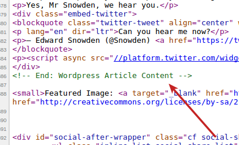
so we can use the rule startHere(.*?)endHere as follow
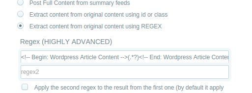
and the full content will get extracted successfully
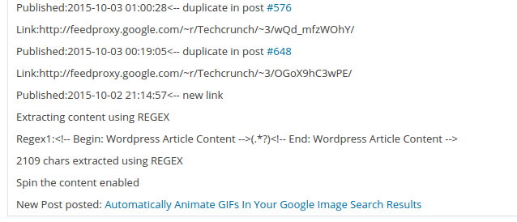This is a basic regex example and you can find full reference of REGEX here and a REGEX tester here
You should add the brackets to the content that will be extracted so as example startHere(.*?)endHere you can see two brackets these brackets tell plugin where the content extraction starts and ends.
Special charachters should be escaped using a backslash so if for example your startHere text included a dot or a question mark it should be escaped by a backslash.
example startHere is starts here.--> should be escaped as follow starts here\.-->REGEX is complex and can not be covered here but we gave a basic example that may help in some cases but for mastering regex you will need to learn it further.
- Strip parts after extracting usind id/class: If the content that was extracted contains a div that you don't like as example an ad div or comments box or whatever, you can add it's id/class/xpath for removal 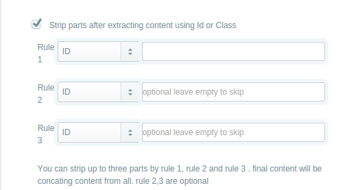
- Strip parts using REGEX: in this field you can regex paterns to strip any part of the extracted content but make sure to verify that the regex will work before using it using any regex tester like REGEXPAL.COM
Example: if in the extracted content a part I don't like and want to strip starting with starting with "startHere" and ending with "endHere", the regex to strip will be startHere.*endHere please note startHere is the starting of the part you want to remove not literally the startHere chars. 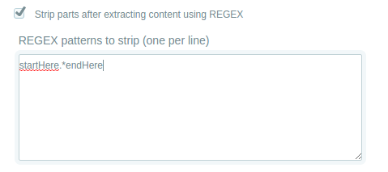 - Search and replace: where you can replace parts from the content before posting. this also support REGEX so you can replace a specific match with another.
- Original Time: tick to post the post with the original time of the feed post
-
Set post categories to original post categories: some sites declare the post categories of the feed item at the feed itself. in case the feed you are posting from is declaring the categories then you can use this option as example TechCrunch are one of them

- Extract original tags and set it as tags: you can define the css id or class or xpath of any div that is containing (displaying) the post tags and the plugin will extract and search for tags in it
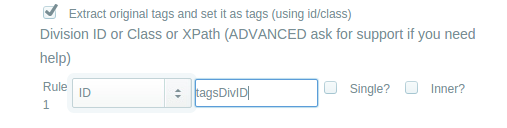 - Extract author: Just like tags you can define a tag css class/id/xpath and the plugin will extract the author name from and assign the author to the post if exists or it will create it and assign
- Skip posts without images: tick to skip posts without images
- Process items from bottom to top instead: this option will reverse the order of the items in the feed before processing it.
- Decode html entities: Some websites display content in feed html encoded. this option will decode it to readable html before processing it.
- Don't extract enclosure image: If you asked the plugin to set a featured image and it didn't find any image in the content it looks if the feed contains an image defined as enclosure and set it if found.
- Skip the post if there is there is a published one with same title: by default the plugin does not post same item twice as it records it's url and if an older one with same url the newer will be ignored but you can still use this option that will make the plugin verify if there is an already posted item with the same title and if exists it will not be posted.
-
Amazon Campaign - top
Using Amazon cmpaign you can post amazon products as posts to your wordpress
Note: below are the campaign specific options. you can also check the general options already explained above.
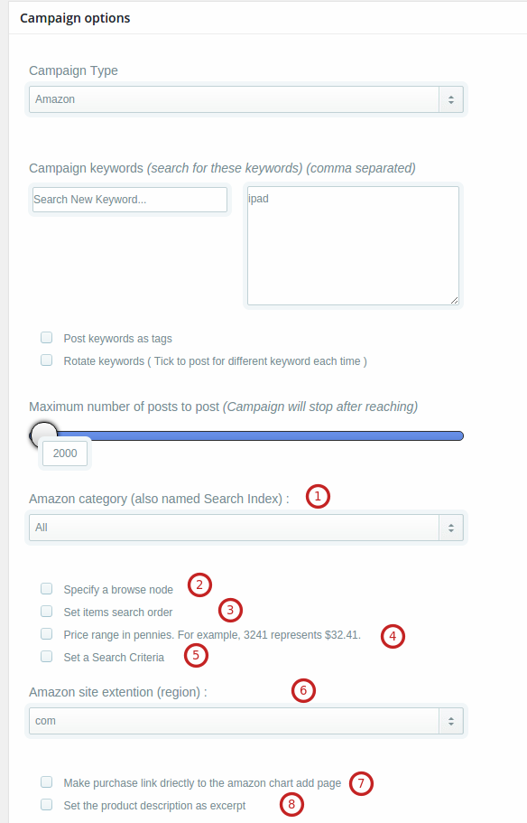- Amazon category : choose amazon category you wanna post from
- Browse Node : to search a specific subcategory visit browsenodes.com and get the node id . you must select the category the node belongs to otherwise no products will be posted
- Search order: activate to set the order of items retuned by the search.
- Price Range: to post products with price range set lower and higher price
- Search Criteria: use this to set a specific allowed search criteria like if you are posting movies and want to post for a specific actor so you can set the actor name. You can also use just this criteria for search.
- Amazon Region: selct what amazon site to search
- Make purchase link driectly to the amazon chart add page: this option will make the amazon buy link sends the visitor to the add to chart form directly.
- Set the product description as excerpt: if you want the excerpt to have the product description.
-
Youtube Campaign - top
Youtube campaigns allows you to post videos from youtube to your wordpress. You can post by keyword, from a specific channel or from a specific playlist
Note: below are the campaign specific options. you can also check the general options already explained above.
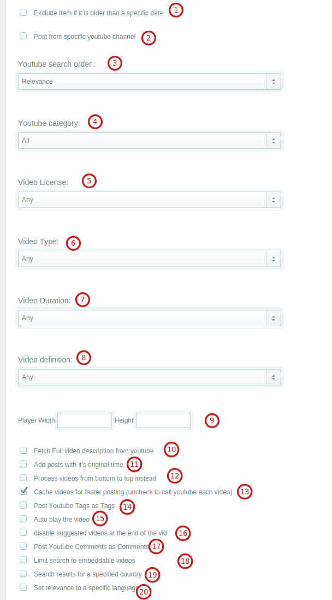- Execlude item if it is older than a specific date: set a date where the plugin will ignore all videos that are older than this date.
- Specific channel: add the channel id to get the id check the channel link it is the words after youtube.com/channel/
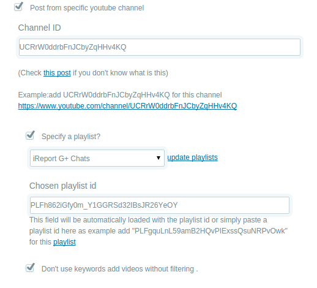
You can also select a playlist to post from that belongs to this channel. - Search order : choose what search order
- Category : choose what category
- License: set video license
- Type: set video type if episode or movie
- Duration: set video duration if short,medium or long video.
- Definition: set video definition if HD or Standard.
- Player width : choose the video player width in pixels
- Fetch Full video description from youtube :Activate if you want the plugin to load the original youtube video page and extract the full description.
- Add posts with it's original time :activate if you want the plugin to set the post time to the original video time
- Process videos from bottom to top instead :Activate if you want the plugin to reverse the order of fetched videos.
- Cache videos for faster posting (uncheck to call youtube each video) :By default the plugin cache the videos fetched each time for the next time to post from them. If you want the plugin to always get fresh data from Youtube, deactivate this option.
- Post Youtube Tags as Tags :This will extract the original video tags from youtube and post them as wordpress post tags.
- Auto play the video :Activate if you want the posted video to automatically play when the page get loaded.
- disable suggested videos at the end of the vid :By default youtube displays suggested videos after the video stream reach it's end. activate this option if you want to disable these suggestions.
- Post Youtube Comments as Comments :This option will get latest youtube video comments and post them to the post as wordpress comments.
- Limit search to embeddable videos :Some youtube videos are not allowed to be embeded. activate this option if you want to search embed enabled videos.
- Search results for a specified country :Set a country so the results returned are customized for this country.
- Set relevance to a specific language :Set a language where the relevance of the returned videos match.
-
Vimeo Campaign - top
Vimeo campaigns allows you to post videos from vimeo to your wordpress. You can post by keyword, from a specific channel/user.
Note: below are the campaign specific options. you can also check the general options already explained above.
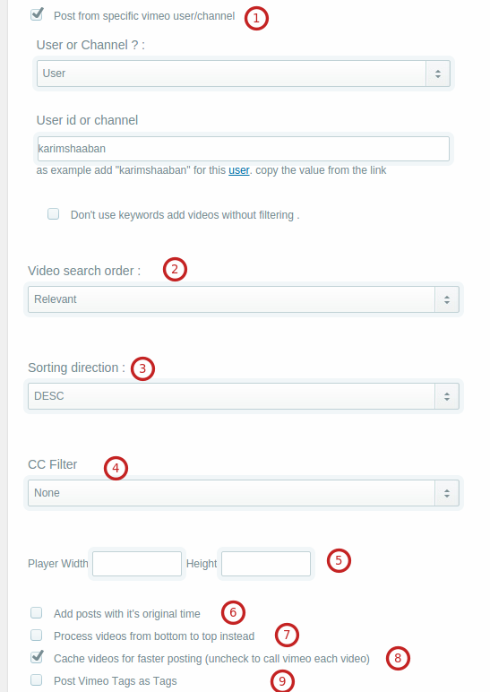- Post from specific vimeo user/channel: in case you want to limit posting from a specific vimeo channel
- Video search order:Set the order of returned items.
- Sorting direction: direction of sorting Descending or ascending.
- CC filter: creative common license check < href="https://vimeo.com/creativecommons">this for list of license
- Player width and height: set hieght and width as needed
- Add posts with it's original time: this will set the posted item to wordpress with the same date of the published video
- Process videos from bottom to top instead: reverse the order of returned videos so the last video will be posted first
- Cache videos: deactivate if you want the plugin to call vimeo each time it posts.
- Post vimeo tags as tags: activate if you want to post the video tags as wordpress tags.
-
Clickbank Campaign - top
Clickbank campaign posts products from clickbank with your affiliate links
Note: below are the campaign specific options. you can also check the general options already explained above.
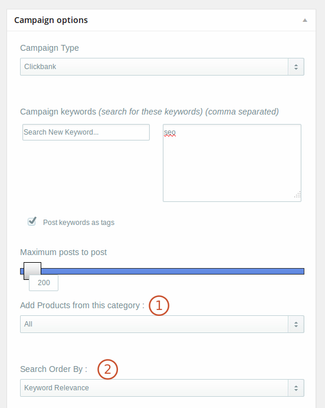- Clickbank category: choose what category to post from
- Search order : choose the search order
-
Flicker Campaign - top
Flicker campaign posts images from flicker directly to your wordpress by keyword or from a specific Flicker user.
Note: below are the campaign specific options. you can also check the general options already explained above.
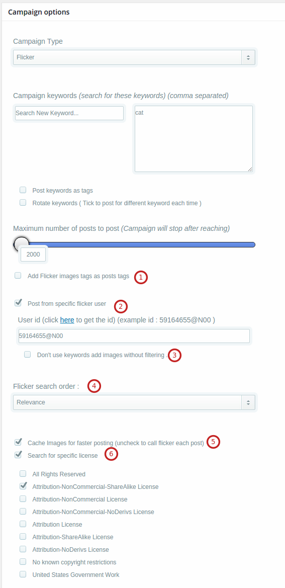- Add flicker tags: check this to add flicker image tags as wordpress tags
- Post from specific user: tick this to post from just one user
- Don't user keywords: use this to add all the user images without searching
- Flicker search order: choose searching order
- Cache images: tick this option for caching images other than calling flicker each time
- Specific license: if you want to post images with specified licenses only.
-
eBay Campaign - top
eBay campaign will post ebay items to your wordpress
Note: below are the campaign specific options. you can also check the general options already explained above.
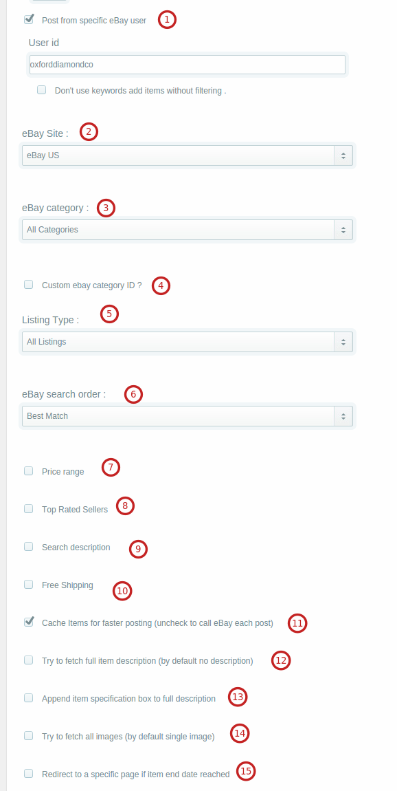- eBay user: activate if you like to post just from one seller
- eBay site : use your ebay site
- eBay category : what category to post from
- Custom ebay category ID:If you want to post from any sub-category just paste it's id here. check this post on how to get the id of any sub-category.
- Listing type : choose if biding or bin or all
- eBay search order : choose search order
- price range : tick if you like to post items from range
- Top rated seller : tick to post from top rated sellers only
- Search description : search the description als for the specified keywords
- Free shipping : tick to post items with free shipping only
- Cache items : check to cache the items otherwise eBay will be called each time the campaign runs.
- Try to fetch full description: activate this option if you want the plugin to load the original item page and extract the full description
- Append item specification box to full description: this option will make the plugin extract the specification box (if available) from eBay to the description
- Try to fetch all images: Activate this option if you want to grab all product images and add them as a gallery
- Redirct to a specific page if item end date reached: activate if you want the plugin to auto-redirct a visitor if the item end date was already reached.
-
Facebook Campaign - top
Facebook campaigns allows you to post from any FB page to your wordpress blog.
Note: below are the campaign specific options. you can also check the general options already explained above.
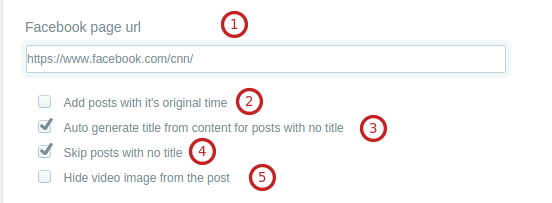- Facebook page url: url of the facebook page you want to post from
- Add posts with it's original time: this option makes the plugin set the posted wordpress post time to the original FB post time.
- Auto generate title: this option will automatically generate title from the FB post
- Skip posts with no title: if the post does not contain any content so no generated title you can skip this post.
- Hide video image from the post: by default if there were a video at the post it get embeded to wordpress and it's image get also embed to the post. activate this option if you don't like the plugin to embed the image of the video.
-
Pinterest Campaign - top
Pinterest campaigns allows you to post pins from pinterest to your wordpress. You can post by keyword, from a specific user.
Note: below are the campaign specific options. you can also check the general options already explained above.
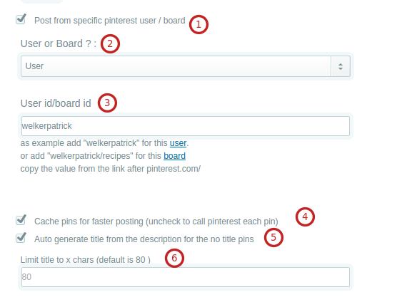- Specific user/board: activate this option if you want to limit posting to only one pinterest user or from a specific pinterest board
- Choose if user or board
- User Id/ board Id: according to the previous choice paste the user id or the board id.
- Cache pins for faster posting: disable this if you want the plugin to call Pinterest for each post to get up to date data.
- Auto generate title: this option will automatically generate a tilte from pinterest pin content.
- Title length: set the auto-generated title length.
-
Instagram Campaign - top
Instagram campaigns allows you to post images from instagram to your wordpress. You can post by keyword, from a specific user.
Note: below are the campaign specific options. you can also check the general options already explained above.
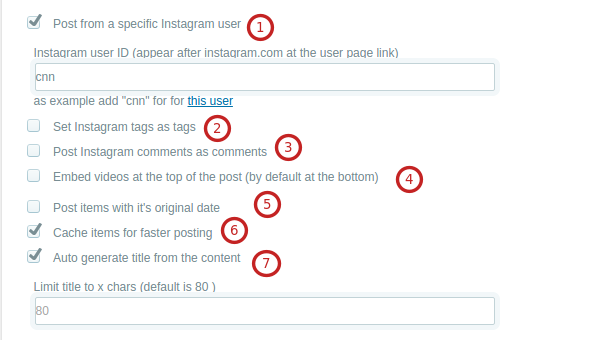- Post from a specific user: activate if you want to post from a specific user only.
- Set tags as tags: activate if you want the plugin to extract the tags from instagarm and set as wordpress tags.
- Post comments as comments: activate if you want to post comments from instagram to the post
- Post items with it's original date: activate if you want the date of the final post to be as same as the date of the instagram pic.
- Cache items for faster posting: deactivate if you want the plugin to call instagram for fresh date each post
- Auto generate title: activate if you want the plugin to automatically generate title from the description
- Limit title: set number of chars for the title. by default 80
-
Twitter Campaign - top
Twitter campaigns allows you to post tweets from Twitter to your wordpress. You can post by keyword, hashtag or from a specific user.
Note: below are the campaign specific options. you can also check the general options already explained above.
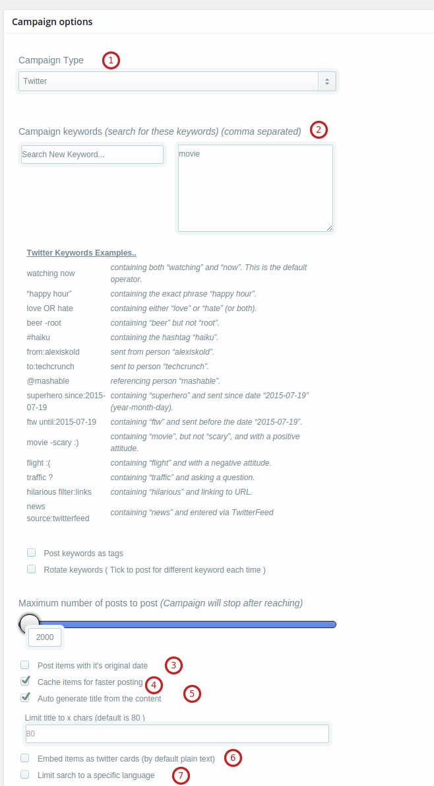- Twitter Campaign type
- Twitter keyword: read the examples below to know allowed keywords
- Post items with it's original date: this option makes the plugin set the post date to the original tweet date.
- Cache items for faster posting: deactivate if you want the plugin to call twitter for each post.
- Auto generate title: activate if you want to automatically generate a title from the tweet content.
- Embed items as twitter cards: this option will make the content of the post as an embeded twitter card.
- Limit search to a specific language: in case you want the returned tweets to be in a specific language.
-
Spintax Campaign - top
Spintax campaigns allows you to post from a spintax formatted post. you add a post content in a spintax format and the plugin will auto generate a random spin from your used spintax
Note: below are the campaign specific options. you can also check the general options already explained above.
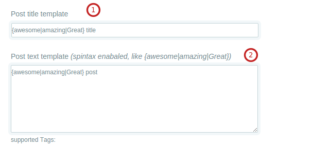- Spintax title
- Spintax content
-
SoundCloud Campaign - top
SoundCloud Campaign allows you to post soundcloud tracks from soundcloud.com to your wordpress by keyword or from any specific user or playlist.
Note: below are the campaign specific options. you can also check the general options already explained above.
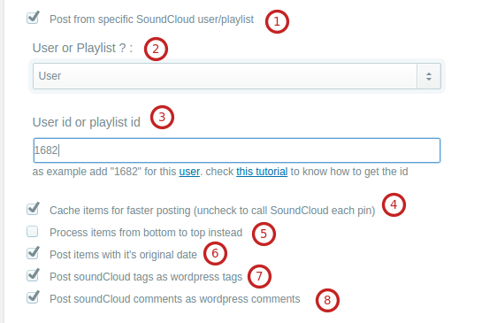- Specific user/playlist: activate if you want to post from a specific user or playlist
- User or playlist: choose if a user or playlist
- User id or playlist id: set the user id if you chosen a user or a playlist id if you chosen a playlist and to know the numeric id, Check this tutorial
- Cache items for faster posting: activate if you want the plugin to cache the items otherwise it will call soundCloud each time it tries to post.
- Process items from bottom to top: activate if you want to reverse the order of the returned set of items from soundCloud
- Post items with it's original date: activate if you want to post the wordpress posts with the same date of the sound.
- Post tags as tags will set the sound tags at soundCloud as wordpress tags at wordpress
- Post comments as comments will set the sound latest 25 comments as wordpress comments.
-
Craigslist Campaign - top
Craigslist Campaign allows you to post from Craigslist to wordpress .
Note: below are the campaign specific options. you can also check the general options already explained above.
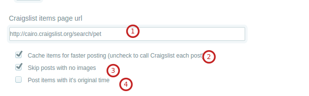- Craigslist items page url: visit Craigslist and add any category or search url that displays items for the plugin to post from. Please don't add here a specific item url you can add a specific seller page url that displays his items as well.
- Cache items: disable if you want to call Craigslist every time to post an
- Skip posts with no images: some listings does not contain user added image and this option is to skip them if you like.
- Post items with it's original time: set the wordpress posted post time as the same original post time.
C) Settings - top
to update the settings visit the hit "settings" under the "wordpress automatic" menu
- Amazon settings
- Clickbank settings
- The Best Spinner settings
- Flicker settings
- eBay settings
- Youtube settings
- Vimeo settings
- Facebook settings
- Twitter settings
- Cron settings
- Search and Replace settings
- Ads settings
- Proxy settings
Amazon Settings - Back to settings - top
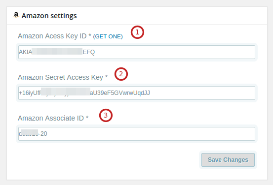- Amazon Access Key:if you want to add amazon products to your blog and don't have an amazon associate account create a new one from here and you can get amazon access key from your amazon account here
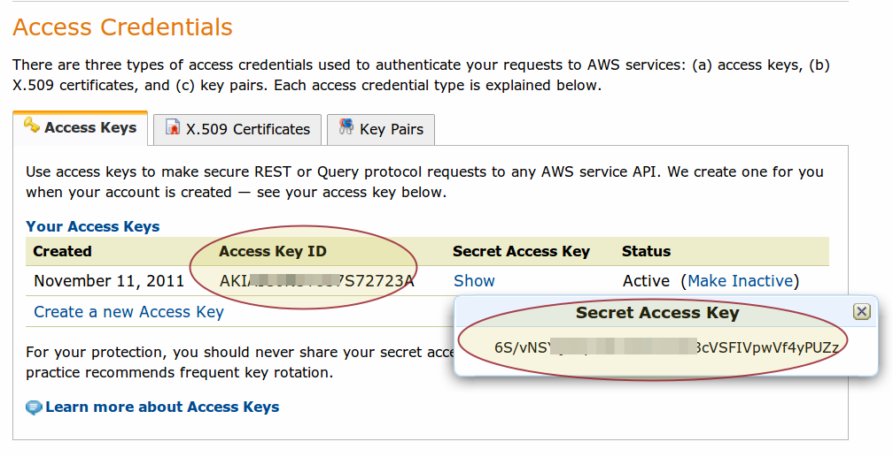 you can view this vid for how to get these credentials
- Amazon Secret Key: secret access key is close to the access key have a look at the screenshot above
- Amazon Associate id: if you have already registered an amazon account then you can recieve commisions from buyers redirected via your blog just login to your account and you will see your associate id on the top left of the account like in the screenshot below copy it and paste to settings
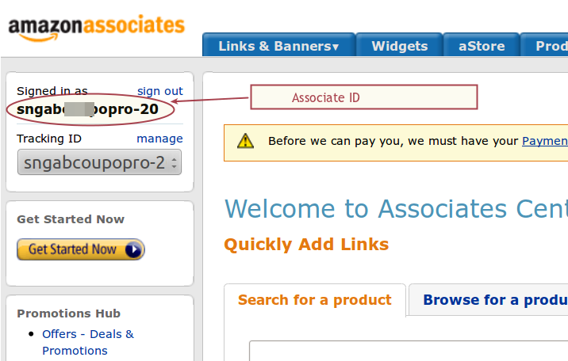
Clickbank Settings - Back to settings - top
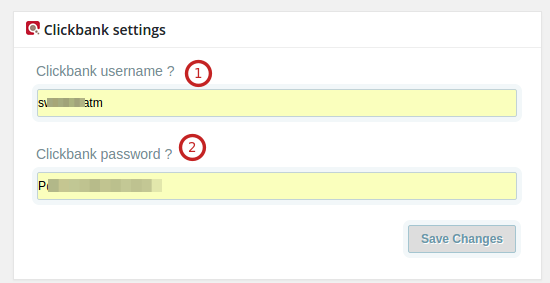- Clickbank username: if you like to have products from clickbank posted to your blog then register an account and add your account username
- Clickbank password
The Best Spinner Settings - Back to settings - top
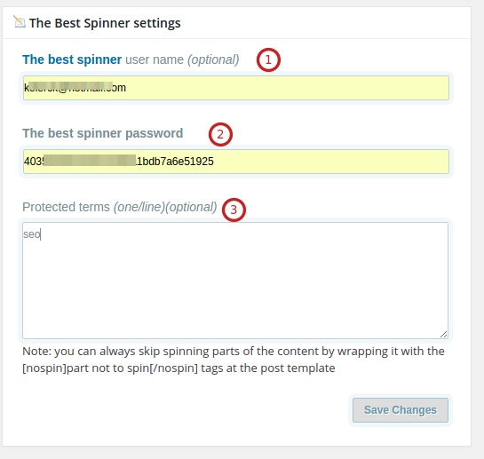- The best spinner username : if you have thebestspinner.com account add your username and password
- Password
- Protected terms: terms where the best spinner will protect from spinning.
Flicker Settings - Back to settings - top
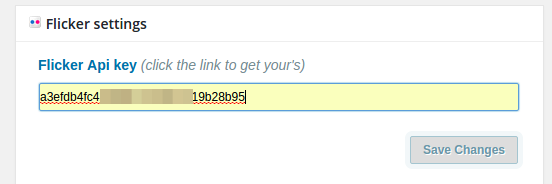- Flicker api key : click the link to get a flicker api key
eBay Settings - Back to settings - top
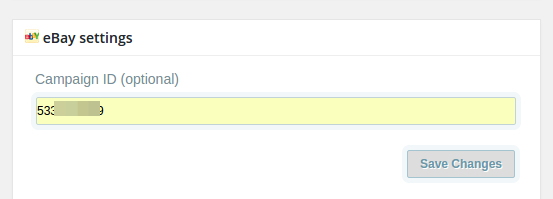- eBay Campaign ID: if you have an ebay affiliate account add the campaign id here. you can apply here
Youtube Settings - Back to settings - top
- API Key : View the tutorial here on how to get it.
Instagram Settings - Back to settings - top
- Instagram Api client id : check the tutorial here on how to get it
Vimeo Settings - Back to settings - top
- Vimeo Access Token : check the tutorial here on how to get it
Facebook Settings - Back to settings - top
- Facebook App ID : check the tutorial here on how to get it
- App Secret: from the above tutorial also
- Clean any generated fb tokens (Tick this if you want to regenerate): once you add these App ID and App Secret the plugin uses them to generate an access token and this access token is used to access FB. if you want to regernate the token using the current APP ID and APP Secret, activate this option
Twitter Settings - Back to settings - top

- Twitter Consumer Key : check the tutorial here on how to get it
- Consumer Secret: from the above tutorial also
- Clean any generated TW tokens (Tick this if you want to regenerate): once you add these credentials the plugin uses them to generate an access token and this access token is used to access TW. if you want to regernate the token using the current credentials, activate this option
Cron Settings - Back to settings - top
- Cron secret word : Your cron link will be example.com/?wp_automatic=YOUR_SECRET_WORD and if you setup your cron job you will need to use the new cron link appears below after clicking save.
- Cron command: copy the command at the yellow box to setup a cron job.
- Other Cron command: If the above command didn't work use this one instead.
- Use Built-in Cron: activate this only if you don't want to setup an external cron job but note that it is highly recommended that you setup an external cron job.
- Preview posts in edit screen not via front end: So if you clicked the posted post link it sends you to the post editing page directly.
Search and Replace Settings - Back to settings - top
- Search for words in the article and replace it (one set per line) like word1|word2|word3 . if the post contains word1 it will be replaced by word2 or word3
- Replace litterally don't expect words replace: this option will replace the word1 with word2 even if it is not a word so even if word1 is a part of a word it will be replaced.
Ads Settings - Back to settings - top
- Paste your needed ad codes like adsense code or write any ad code here: this code will be replaced by the [ad_1] shortcode and [ad_2] shortcode at the generated posts.
Proxy Settings - Back to settings - top
- Proxy List: this list is only used by the articles module. proxies should be with port 80 or any port that is open for connection at your side.
C) Setup Cron Job - top
if your host don't support cron jobs or you having any problem with setting up the cron as below then use this free online service to call the file for you after a fixed time intervals (just copy your cron file url don't copy the cron command link) if your host support cron jobs then- Visit your cpanel and hit the "cron" icons

- add your cron command and hit "add new cron job" button
E) Frequently asked questions - top
-
Q: I can't get articles for my keywords although I setup everything the right way ?
if you have problems posting articles then your ip may be blocked from articlesbase.com and to work arround it add a proxy list in settings page Proxy list field one proxy per line and each line should be on the format ip:port and you can get a free proxy list from Proxy List
-
Q: When Cron Run which campaign will be processed and how many posts will be added ?
The cron is designed in such a way not to post lot’s of content in small time intervals not to get banned from Search Engine so every cron run means only one new post and you can set the cron call time as needed let’s assume you have 2 camapaigns camp#1 and camp#2 at the first cron run camp#1 will be processed at the second cron run camp#2 will be processed and circulating that’s all .
Once again, thank you so much for purchasing this Plugin. As I said at the beginning, I'd be glad to help you if you have any questions relating to this Plugin. No guarantees, but I'll do my best to assist. If you have a more general question relating to the Plugins on PluginForest, you might consider visiting the forums and asking your question in the "Item Discussion" section.
Atef